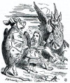

WebMining
with
Python
by c24Bfor Hackinscience Python Crash Course
Inspired by DataPublica: a special thanks to @samuelcharron
Webmining with Python
Webmining?
⇩
- Webmining is the application of data mining techniques to discover patterns from the Web
- It's also a misused word to say:
"collect data from the Web in order to constitute datasets and explore it"
Data Scrapping: Collect Data
- Transform non structured data into structure dataset
- Output Format:
- Files (small datasets): Json, CSV, ...
- Databases (big datasets)
Data Mining: Finding patterns
- Anomaly detection
- Association rule learning
- Clustering
- Classification
- Regression
- Summarization
☞See Scientific Computing tutorial by @h4nt1
Data SCrapping & Data Mining
applied to web
⇩
Web Crawling 
- Web: data not well structured
- Structure: text, links between pages, visual structure
- Usage: reading, textual search engine, study of relationships
- No need to know the website: following the links blind
Web Scraping
- Hidden structure: mostly a database beside the website
- A page: one fragment of this database
- Rebuild a database from the entire websiter
- Usage: crossing data, structured search engines, specific studies
- Absolute need to know the website: specific extraction
⚒Tools⚒
| ☁Internet | ⇅téléchargement | 🔤chaîne de caractères | 🌲 document (DOM) | ☰dataset | ||||
| 📄 | ⇢ | ⇅ | ⇢ | "<html>" |
⇢ | <html> |
⇢ | |
|
⇅Requests ? 
⇩
Requests
Using Requests: example
import requests
url = "http://fr.wikipedia.org/wiki/Araignée"
resultat = requests.get(url)
resultat.status_code
200resultat.text[:104]
<!DOCTYPE html>
<html lang="fr" dir="ltr" class="client-nojs">
<head>
<title>Araneae - Wikipédia</title>🔤Beautiful Soup? 
⇩
BeautifulSoup
- BeautifulSoup: a simple module to access to html entities
Using BeautifulSoup: example
from bs4 import BeautifulSoup
doc = """
<html><body>
<title>Hello World</title>
<title>Hello World</title>
<ul class='container'>
<li id='li-1'>premier li</li>
<li id='li-2'>deuxieme li</li>
</ul>
</body></html>
"""
# Create a document from a string
soup = BeautifulSoup(doc)
# Select the element
title = soup.title
text_title = soup.title.text
>>>print(text_title)
'Hello World'
#Find all elements
list = soup.find_all('li')
>>>print(list)
[premier li,deuxieme li]
Beautiful Soup : Selecting html tags (2/2)
BeautifulSoup let's you access the html element by tag, class, next and previous
#finding first element with tag <h1>
soup.find('h1')
#finding next element with tag <h3>
first = soup.find('h2')
second = first.next_sibling
#finding all links
soup.find_all('a')
#finding one element by tag and class name
soup.find('h1',{'class':'featured')
Inspect the webpage
Your web browser let's you inspect the dom and select the value of the data you want to extract
☞ Open Chrome or Firefox, press F12
🌲Manipulating DOM
DOM stands for Document Object Mapper.
Requests
+
BeautifulSoup
⇩
Loading and extracting a webpage
>>>import requests
>>>from bs4 import BeautifulSoup as bsoup
>>>r = requests.get('http://www.bbc.co.uk/science/0/')
# we should always verify that page is correctly loaded
# if r.status_code == 200:
>>>doc = r.text
>>>soup = bsoup(doc)
>>>print(soup.title)
<title>BBC Science - BBC Science</title>
>>>print(soup.title.text)
BBC Science - BBC Science
Now your turn!
Further readings
- Other parsing tools:
- LXML
- PyQuery
- Webcrawler in python:
- Scrapy
- Newspaper